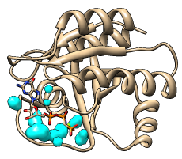

Surfnet
H-ras (121p)
protein vs. ligand |
|---|
|

|
Surfnet identifies molecular cavities and indentations and displays
them as surfaces. The method is an adaptation of that described in:
SURFNET: a program for visualizing molecular surfaces, cavities,
and intermolecular interactions.
Laskowski RA.
J Mol Graph. 1995 Oct;13(5):323-30, 307-8.
See also:
Measure and Color Blobs,
Intersurf,
CASTp Data
There are several ways to start
Surfnet, a tool in the Surface/Binding Analysis category.
Surfnet finds cavities between two
specified sets of atoms,
Atom Set 1 and Atom Set 2.
The two sets of atoms can be identical, overlapping, or completely different,
and in the same or different models.
If Atom Set 2 is left blank, it is assumed to be the same as
Atom Set 1.
A brief description of the method is needed to explain the options:
- Pairwise combinations of atoms, one from each set,
are examined for intervening void space.
Only pairs of atoms no farther apart than the
Distance Cutoff (in Å) are examined. A "gap
sphere" is placed directly between the two atoms and shrunk until it no
longer intersects the VDW surface of any atom.
Atomic radii are
assigned by Chimera based on inferred atom types.
Gap spheres with radii equal to or greater than the Grid Interval
are retained.
- The Density of each gap sphere is smeared out from its center
according to a Gaussian or Quadratic function such that the
value at its radius (100.0 in arbitrary units) is half the value at its
peak (200.0).
- At each point in a 3-dimensional grid with Grid Interval
spacing (in Å), only the largest density
contribution from a gap sphere is stored.
This is not necessarily the contribution from the nearest gap sphere center,
since the decrease in density with distance depends on radius.
- The grid values are used to generate a contour surface at the level
of 100.0, shown in the specified Representation
(Mesh or solid Surface) and
Color
(default white).
OK executes a Surfnet calculation
and dismisses the dialog. Apply runs the calculation
without closing the dialog. The resulting surface is generated as a
surface model
and assigned the same model number and transformation as the
corresponding molecule model (or, if atoms from more than one model
were used, the lowest-numbered of those models).
Each run creates an additional surface model,
which can be hidden or closed using the
Model Panel.
Close closes the dialog, and Help opens this
manual page in a browser window.
UCSF Computer Graphics Laboratory / September 2010